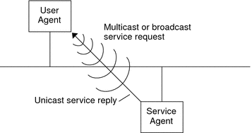
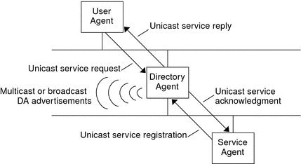

|
||||||||||||||||
|
Part I Network Services Topics Part II Accessing Network File Systems Topics 4. Managing Network File Systems (Overview) 5. Network File System Administration (Tasks) 6. Accessing Network File Systems (Reference) 8. Planning and Enabling SLP (Tasks) 10. Incorporating Legacy Services Part V Serial Networking Topics 15. Solaris PPP 4.0 (Overview) 16. Planning for the PPP Link (Tasks) 17. Setting Up a Dial-up PPP Link (Tasks) 18. Setting Up a Leased-Line PPP Link (Tasks) 19. Setting Up PPP Authentication (Tasks) 20. Setting Up a PPPoE Tunnel (Tasks) 21. Fixing Common PPP Problems (Tasks) 22. Solaris PPP 4.0 (Reference) 23. Migrating From Asynchronous Solaris PPP to Solaris PPP 4.0 (Tasks) 25. Administering UUCP (Tasks) Part VI Working With Remote Systems Topics 27. Working With Remote Systems (Overview) 28. Administering the FTP Server (Tasks) 29. Accessing Remote Systems (Tasks) Part VII Monitoring Network Services Topics |
SLP ArchitectureThis section outlines the fundamental operation of SLP and describes agents and processes that are used in SLP administration. SLP provides all of the following services automatically, with little or no configuration.
In addition, you can do the following to administer and tune SLP operation if necessary.
Summary of the SLP DesignSLP libraries inform network-aware agents that advertise services in order for those services to be discovered over a network. SLP agents maintain up-to-date information on the type and location of services. These agents can also use proxy registrations to advertise services that are not directly SLP enabled. For more information, see Chapter 10, Incorporating Legacy Services. Client applications rely on SLP libraries that make requests directly to the agents that advertise services. SLP Agents and ProcessesThe following table describes the SLP agents. For expanded definitions of these terms and other terms that are used in this volume, refer to the Glossary. Table 7-1 SLP Agents
The following figure shows the basic agents and processes that implement the SLP architecture. The figure represents a default deployment of SLP. No special configuration has been done. Only two agents are required: the UA and SA. The SLP framework allows the UA to multicast requests for services to the SA. The SA unicasts a reply to the UA. For example, when the UA sends a service request message, the SA responds with a service reply message. The service reply contains the location of services that match the client's requirements. Other requests and replies are possible for attributes and service types. For more information, see Chapter 11, SLP (Reference). Figure 7-1 SLP Basic Agents and ProcessesThe following figure shows the basic agents and processes that implement the SLP architecture when a DA is deployed in the framework. Figure 7-2 SLP Architectural Agents and Processes Implemented With a DAWhen you deploy DAs, fewer messages are sent in the network and UAs can retrieve information much faster. DAs are essential when the size of a network increases or for situations in which there is no support for multicast routing. The DA serves as a cache for registered service advertisements. SAs send register messages (SrvReg) that list all the services they advertise to DAs. SAs then receive acknowledgments (SrvAck) in reply. The service advertisements are refreshed with the DA, or they expire according to the lifetime that is set for the advertisement. After a UA discovers a DA, the UA unicasts a request to the DA rather than multicasting requests to SAs. For more information about Solaris SLP messages, refer to Chapter 11, SLP (Reference). |
|||||||||||||||
|